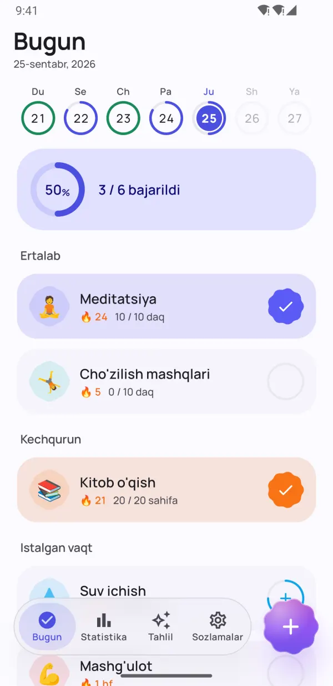
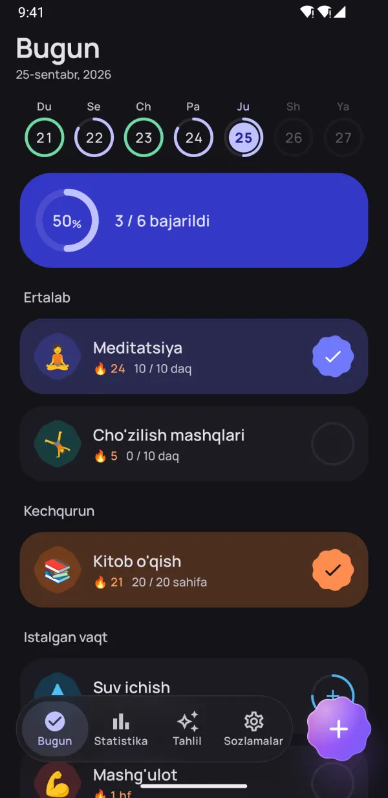
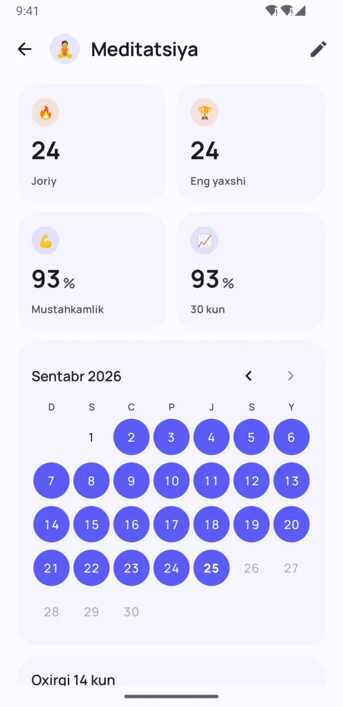
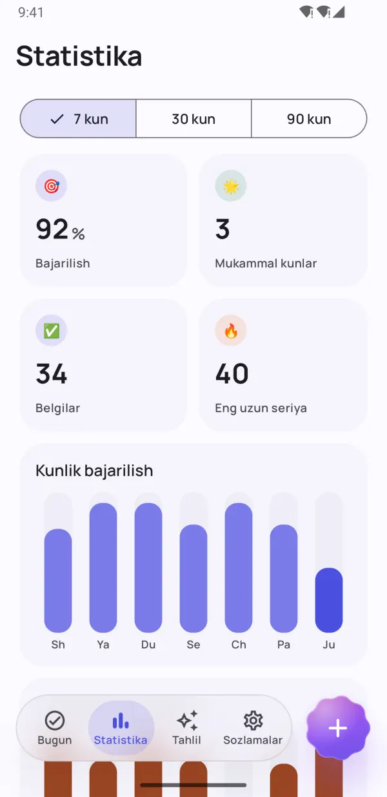
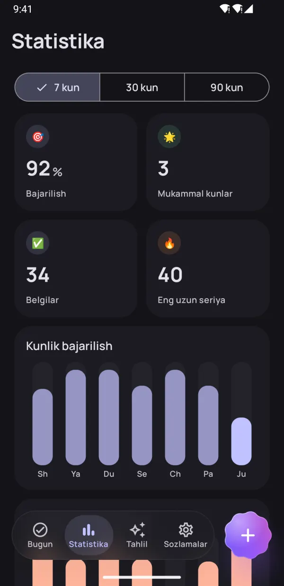
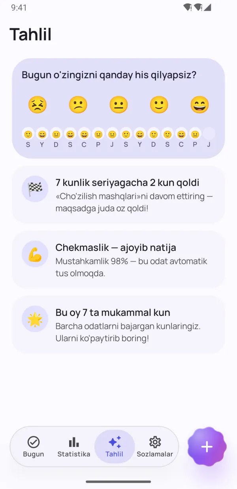
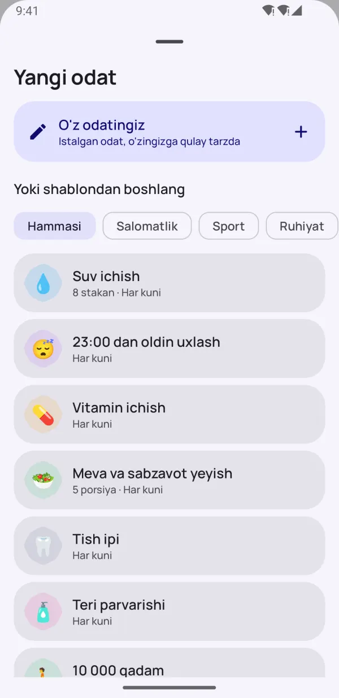
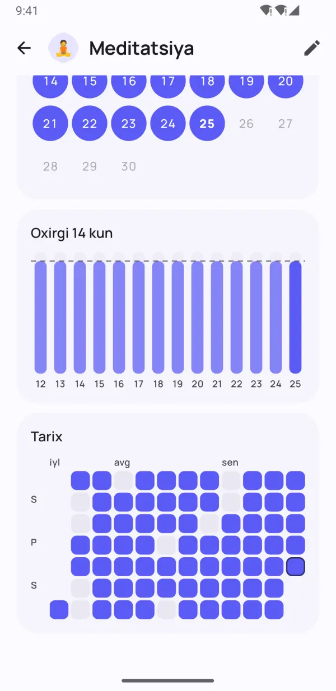

Kichik odatlar.
Katta o'zgarishlar.
Dotday foydali odatlarni shakllantirish va zararli odatlardan qutulishga yordam beradi — hech qanday bosimsiz. Bir bosishda belgilang, band kunlarda ham seriyani saqlang va aynan sizga nima foyda berishini ko'ring.
- Bepul
- Ro'yxatdan o'tishsiz
- Ma'lumotlar telefoningizda
- 13 ta til


Odatlar mustahkam o'rnashishi uchun
Izchil bo'lish uchun kerakli hamma narsa — ortiqcha hech narsa yo'q.
Butun kuningiz — bir bosishda
Ertalab, Kunduzi va Kechqurun guruhlari kundalik rejangizni oddiy ro'yxatga aylantiradi. Bir bosing — tamom.
- Ha/yo'q, son, taymer va yomon odatni tashlash
- Hafta lentasida har bir kun ko'rinib turadi
- «Bajarildi» va «Keyinroq» — bevosita eslatmada

Yomon kunni kechiradigan seriyalar
Dam olish kunlari, moslashuvchan jadval va seriyani muzlatish sizni yo'ldan qaytarmaydi. Odat mustahkamligi seriya uzunligini emas, odat qanchalik o'rnashganini ko'rsatadi.
- Seriyani buzmasdan kunni o'tkazib yuborish
- Band yoki betob kunlar uchun seriyani muzlatish
- 0 dan 100% gacha odat mustahkamligi


Haqiqiy natijangizni ko'ring
Heatmap, kalendar va bajarilish dinamikasi 7, 30 va 90 kun davomida qanday ketayotganingizni aniq ko'rsatadi.
- Har bir odat uchun heatmap
- Eng uzun seriya va bajarilish foizi
- Kunduzgi va tungi rejimda chiroyli

Ruhlantiruvchi tahlillar
Kayfiyatingizni bir soniyada belgilang — Dotday nima ish berishini topadi: eng yaxshi va eng qiyin kunlaringiz, qaysi odatlar kayfiyatni ko'tarishi.
- Bir bosishda kayfiyatni belgilash
- Keyingi marraga oz qolganda eslatadi
- Sizni baxtliroq qiladigan odatlarni toping
Kichik detallar, katta farq
Kuzatishni oson qiladigan o'ylangan imkoniyatlar.
Bosh ekran widgetlari
Bugungi odatlarni belgilang, seriya yoki heatmapni kuzating — ilovani ochmasdan.
Ishonchli eslatmalar
Odatni bevosita bildirishnomadan belgilang yoki keyinga suring.
Ichki taymer
Vaqtga bog'liq odatlar uchun jonli bildirishnomali taymer.
Health Connect
Qadamlar, uyqu va mashg'ulotlar odatlarni avtomatik belgilaydi.
40 ta shablon
Suv, kitob, sport, meditatsiya, chekmaslik — bir necha soniyada boshlang.
Kuningizni rejalang
Odatlarni ertalab, kunduzi va kechqurun guruhlariga ajrating.
Izohlar va kayfiyat
Har kunga izoh qo'shing va odatlar kayfiyatga qanday ta'sir qilishini ko'ring.
Tungi rejim va AMOLED
Material You ranglari va OLED ekranlar uchun to'liq qora mavzu.
Zaxira nusxa
Pro bilan hammasini JSON yoki CSV'ga eksport qiling va yangi telefonda tiklang.
Ilova ichiga nazar tashlang
Mustahkam odatlar yarating Haqiqiy natijangizni ko'ring Statistika bir qarashda Ruhlantiruvchi tahlillar 
40 ta shablon bilan tez boshlang Tungi rejimda ham chiroyli 
Har kun chiroyli qayd etiladi Maxfiy. Akkauntsiz. Reklamasiz.
Bir daqiqada boshlang
Akkaunt ham, sozlash ham, o'rganish ham shart emas. To'liq yo'riqnomani o'qing →
Odatlarni tanlang
40 ta shablondan tanlang yoki o'zingiznikini yarating — xohlagan odat, o'zingizcha.
Har kuni belgilang
«Bugun» ekranida, widgetda yoki bildirishnomada bir bosish kifoya.
Natijani kuzating
Seriyalar, odat mustahkamligi va tahlillar o'sishingizni ko'rsatadi.
Maxfiylik — asosiy tamoyil
Akkaunt yo'q. Ro'yxatdan o'tish yo'q. Reklama yo'q. Odatlaringiz, izohlaringiz va kayfiyatingiz faqat telefoningizda saqlanadi — biz ularni ko'rmaymiz. Maxfiylik siyosati
- Akkauntsiz
- Reklamasiz
- Internetsiz ishlaydi
- Ma'lumot — sizning telefoningizda
Pro bilan hamma imkoniyatlarni oching
Asosiy funksiyalar umrbod bepul. Cheksiz odatlar va barcha imkoniyatlar uchun Pro'ga o'ting — 7 kun bepul sinab ko'ring.
- Cheksiz odatlar
- To'liq tarix va 90 kunlik statistika
- Barcha tahlillar va kayfiyat bog'liqligi
- Health Connect orqali avtomatik belgilash
- Barcha widgetlar
- Har oy 5 ta seriya muzlatish
- Har bir odatga 5 tagacha eslatma
- JSON va CSV eksport
Oylik, yillik obuna yoki bir martalik umrbod xarid. Google Play'da istalgan vaqtda bekor qilish mumkin.
Ko'p beriladigan savollar
Dotday bepulmi?
Ha. Asosiy ilova umrbod bepul: 5 tagacha odat, eslatmalar, seriyalar, «Bugungi odatlar» widgeti va 30 kunlik statistika. Dotday Pro cheksiz odatlar va barcha imkoniyatlarni ochadi, 7 kun bepul sinov bilan.
Akkaunt ochish kerakmi?
Yo'q. Dotday akkauntsiz, ro'yxatdan o'tishsiz va internetsiz ishlaydi. O'rnating va boshlang.
Ma'lumotlarim qayerda saqlanadi?
Faqat telefoningizda. Odatlaringiz, izohlaringiz va kayfiyatingiz qurilmangizdan chiqmaydi. Pro bilan istalgan vaqtda JSON yoki CSV zaxira nusxa olishingiz mumkin.
Bir kunni o'tkazib yuborsam nima bo'ladi?
Natijangiz yo'qolmaydi. Kunni dam olish kuni sifatida o'tkazib yuborishingiz, seriyani muzlatishingiz yoki kundalik o'rniga haftalik maqsad qo'yishingiz mumkin. Odat mustahkamligi nolga tushmaydi, asta-sekin kamayadi.
Qanday odatlarni kuzatish mumkin?
To'rt xil: ha/yo'q («meditatsiya»), son («8 stakan suv»), taymer («30 daqiqa kitob o'qish») va yomon odatni tashlash («chekmaslik»).
Odatlarimni yangi telefonga qanday o'tkazaman?
Dotday Pro bilan Sozlamalar → Ma'lumotlaringiz → Zaxira nusxa olish'ni bosing va JSON faylni saqlang. Yangi telefonda Dotday'ni o'rnatib, «Zaxiradan tiklash»ni tanlang — tiklash bepul.
iPhone uchun versiyasi bormi?
Hozircha yo'q — Dotday hozir Google Play'da Android uchun mavjud.
Pro obunani qanday bekor qilaman?
Google Play → Profil → To'lovlar va obunalar → Obunalar bo'limida Dotday'ni tanlab, «Bekor qilish»ni bosing. Umrbod xaridni bekor qilish shart emas.
Bugun bitta kichik odatdan boshlang
Kelajakdagi o'zingiz sizga rahmat aytadi. 🌱
YUKLAB OLINGGoogle Play